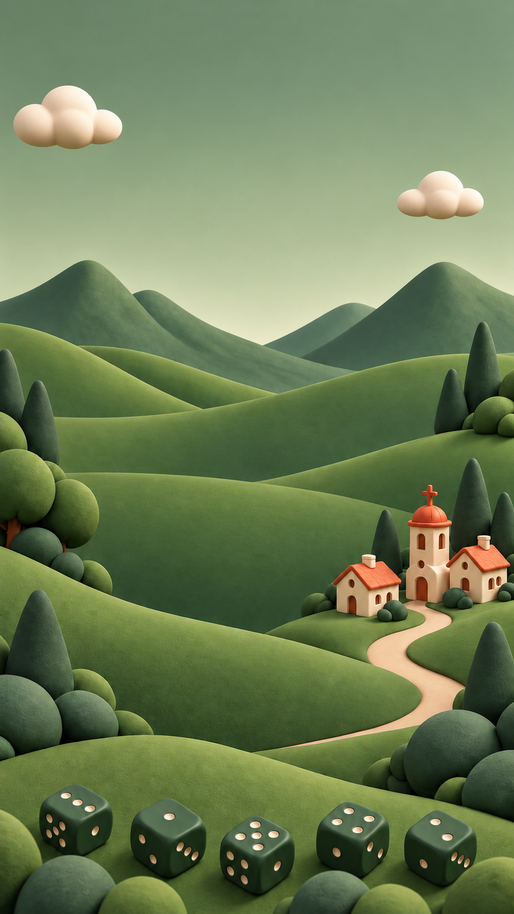
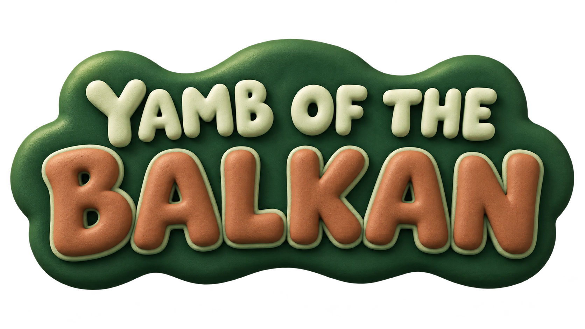
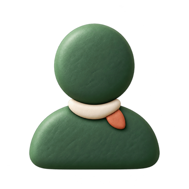
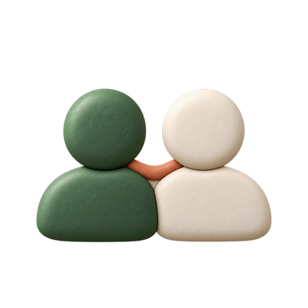
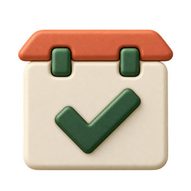
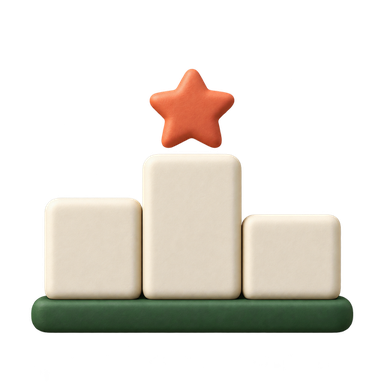
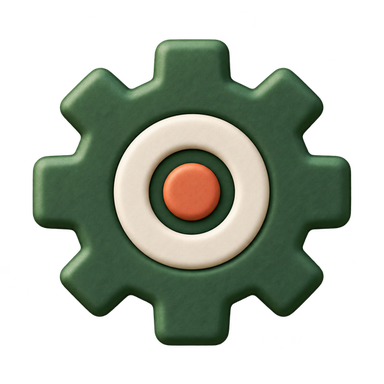
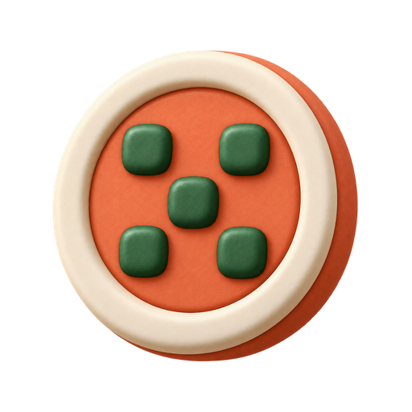
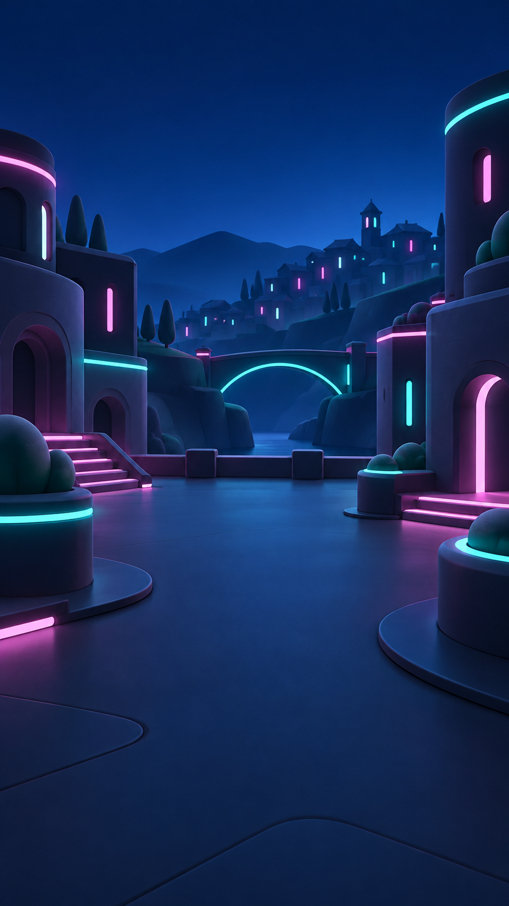

Pregled izgleda svih tema
Deset tema deli 3D Soft Neomorphism. Devet tema ima ciljnu paletu i skicu rasporeda; finalni izgled se potvrđuje tek stvarnim PNG-ovima i snimcima iz aplikacije. Zelena je zaključana referenca. Prazna polja označavaju dokaze koji tek treba da nastanu.
Zelena
Green Room Pack · 3D Soft Neomorphism · Clay
Paleta i geometrijska skica
Paleta Zelene ostaje u aktivnom CSS-u i manifestu; ovde nije redefinisana.
Green Icon Pack
Zaključana referenca; nema nove palete niti preuzimanja motiva u druge teme.
Stvarna pozadina i logo


Originalne ikonice






Dokazi iz aplikacije
Svetlo Zlato
Light Gold Room Pack · 3D Soft Neomorphism · Smooth Rubber / Matte Plastic
Paleta i geometrijska skica
#E6BE83
#FFF1D7
#F3D6A8
#392817
#875024
#76612B
Plan boja Icon Pack-a
#E6BE83
#FFF1D7
#875024
#76612B
Siroke, blago zaravnjene oble forme sa mirnim kosim rezom; bez tanke zlatne ornamentike.
Dukat: Mat medeno-zlatni zetoncic sa jednim utisnutim geometrijskim znakom i sopstvenim rubom; bez Green rasporeda pet tacaka. Akcenat zauzima najviše približno 10% ikone. Ovo je pravilo za izradu, ne završeni PNG.Stvarna pozadina i logo

Originalne ikonice
Dokazi iz aplikacije
Trula Višnja
Dark Cherry Room Pack · 3D Soft Neomorphism · Clay
Paleta i geometrijska skica
#681D25
#431720
#60252E
#FFF6F2
#F1C3B2
#E39A70
Plan boja Icon Pack-a
#8B3038
#F1C3B2
#431720
#E39A70
Malo asimetricna, rukom vajana puna glinena masa sa jednom sirokom udubinom; bez preslikavanja Green oblika.
Dukat: Visnjin glineni novcic sa jednim udubljenim semenom/kapljom i nepravilno zaobljenim rubom; bez pet tacaka. Akcenat zauzima najviše približno 10% ikone. Ovo je pravilo za izradu, ne završeni PNG.Stvarna pozadina i logo

Originalne ikonice
Dokazi iz aplikacije
Plavi Okean
Blue Ocean Room Pack · 3D Soft Neomorphism · Smooth Rubber / Matte Plastic
Paleta i geometrijska skica
#0E5A9B
#FFF4E5
#DEECEB
#18384B
#0B5C8C
#BD684A
Plan boja Icon Pack-a
#0E5A9B
#FFF4E5
#173D5B
#BD684A
Cist sirok luk i jedna blago suzena ivica kao ritam obale ili jedra; bez talasica i camaca dodatih na svaku ikonu.
Dukat: Glatki plavi zetoncic sa jednom plitkom talasastom udubinom i zasecenim mat rubom; bez kopije Green dukata. Akcenat zauzima najviše približno 10% ikone. Ovo je pravilo za izradu, ne završeni PNG.Stvarna pozadina i logo

Originalne ikonice
Dokazi iz aplikacije
Neon Cyber
Neon Cyber Room Pack · 3D Soft Neomorphism · Smooth Rubber / Matte Plastic
Paleta i geometrijska skica
#080D18
#121B2B
#1A2B40
#F4FAFF
#56E5D2
#F08CE3
Plan boja Icon Pack-a
#193455
#56E5D2
#080D18
#F08CE3
Zaobljeni pravougaoni segmenti i jedan jasan urez; cijan ivica nosi citljivost bez vise svetlecih kontura.
Dukat: Jednostavan mat cyber cip sa jednim urezanim znakom; magenta je samo mali funkcionalni naglasak, bez kruga sa pet tacaka. Akcenat zauzima najviše približno 10% ikone. Ovo je pravilo za izradu, ne završeni PNG.Stvarna pozadina i logo

Originalne ikonice
Dokazi iz aplikacije
Kraljevski Ametist
Royal Amethyst Room Pack · 3D Soft Neomorphism · Clay
Paleta i geometrijska skica
#5A386A
#3C284B
#563660
#FBF6FF
#F2C879
#D691B5
Plan boja Icon Pack-a
#5A386A
#E0CDE5
#2D1D3C
#F2C879
Miran, tezak glineni luk i par sirokih faseta, bez dragulja ili krune nalepljene na svaku ikonu.
Dukat: Pljosnati ametistni glineni zetoncic sa jednim arhitektonskim lukom u reljefu; zlatno je malo polje, ne metalna oplata. Akcenat zauzima najviše približno 10% ikone. Ovo je pravilo za izradu, ne završeni PNG.Stvarna pozadina i logo

Originalne ikonice
Dokazi iz aplikacije
Vaskršnja
Easter Room Pack · 3D Soft Neomorphism · Smooth Rubber / Matte Plastic
Paleta i geometrijska skica
#E5D4B9
#FFF8EA
#EEE5D3
#3D4434
#4D6B45
#A66443
Plan boja Icon Pack-a
#D3D5B7
#FFF8EA
#4D6B45
#A66443
Kompaktne glatke ovalne forme sa jednim listastim zasekom; bez serije jaja, cvetova ili masni na funkcionalnim ikonama.
Dukat: Mat krem zetoncic sa jednim jednostavnim listastim utiskom i sopstvenim ovalnim rubom; ne ponavljati Green obod i pet tacaka. Akcenat zauzima najviše približno 10% ikone. Ovo je pravilo za izradu, ne završeni PNG.Stvarna pozadina i logo

Originalne ikonice
Dokazi iz aplikacije
Pustinjsko Staklo
Desert Glass Room Pack · 3D Soft Neomorphism · Clay
Paleta i geometrijska skica
#D79269
#FFF0DA
#F0D0AB
#443027
#87523C
#396B72
Plan boja Icon Pack-a
#D79269
#FFF0DA
#87523C
#396B72
Slojevite horizontalne glinene forme sa dva-tri siroka preloma kao pescar; bez kristala, faseta stakla i sitnih gravura.
Dukat: Koralan pescarni zetoncic sa jednim slojevitim reljefnim usekom i debelim nepravilnim rubom; bez Green pet tacaka. Akcenat zauzima najviše približno 10% ikone. Ovo je pravilo za izradu, ne završeni PNG.Stvarna pozadina i logo

Originalne ikonice
Dokazi iz aplikacije
Mesečev Sjaj
Moonlight Room Pack · 3D Soft Neomorphism · Clay
Paleta i geometrijska skica
#08090C
#252934
#3B3F4B
#F5F5F7
#E1E2E7
#A7A9B8
Plan boja Icon Pack-a
#3B3F4B
#E1E2E7
#181B24
#A7A9B8
Niski zaobljeni reljef sa jednom sirokom konkavnom ivicom; bez zvezda, plavog sjaja i kratera na svakoj ikoni.
Dukat: Srebrnosivi glineni zetoncic sa jednim plitkim kraterom van sredine i tihim tamnim obodom, ne petotackasti novcic. Akcenat zauzima najviše približno 10% ikone. Ovo je pravilo za izradu, ne završeni PNG.Stvarna pozadina i logo

Originalne ikonice
Dokazi iz aplikacije
Severna Maglina
Northern Nebula Room Pack · 3D Soft Neomorphism · Smooth Rubber / Matte Plastic
Paleta i geometrijska skica
#0B1830
#182C44
#24445B
#F5FBFF
#8AE3E4
#C3ACEA
Plan boja Icon Pack-a
#24445B
#F5FBFF
#0B1830
#8AE3E4
Siroke neprekinute oble krive sa jednim mekim ledenim zavrsetkom; bez cyber segmenata ili vise aurora po ikoni.
Dukat: Mat severni zetoncic sa jednim sirokim urezom nalik ledenom grebenu i glatkim obodom; bez Green pet tacaka. Akcenat zauzima najviše približno 10% ikone. Ovo je pravilo za izradu, ne završeni PNG.Stvarna pozadina i logo